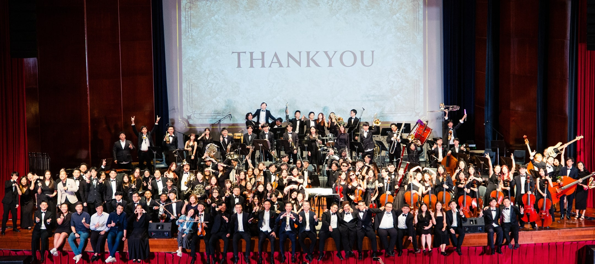
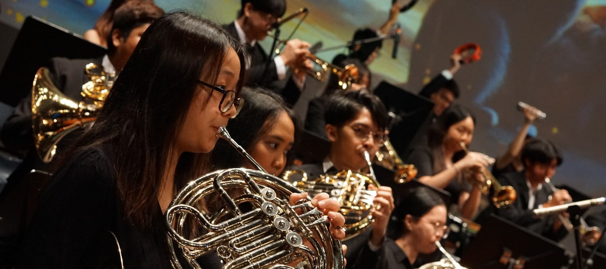

About us
As the first polytechnic Symphony Orchestra in Singapore, the NYP Symphony Orchestra (NYPSO) has grown in stature and repertoire since its formation in 2002.
Comprising wind, string and percussion ensembles, the Orchestra, together with strong support from its alumni members, has been on an incredible journey, and continues to grow from strength to strength. Members of the string ensemble explore and appreciate music created by stringed instruments of varying sizes, with most learning from scratch, under the tutelage of professional and alumni instructors. The percussion section experiments with various genres and styles of performing. Known for incorporating energetic and entertaining choreography into its routines, members often impress audience with their performances. The wind ensemble completes the trinity of the NYP Symphony Orchestra. Its repertoire spans a variety of genres from challenging traditional classical pieces to popular modern tunes that are crowd favourites.
You might be wondering... "Do I need my own instruments?".
Not to worry as the Symphony Orchestra provides instruments, so beinging you own is entirely optional!
Skills you can learn
We hope our members becomes skillsful musician, hence we promote these skills by teaching them to our members!
These skills can include
-
Strong Teamwork
-
Discipline
-
Enhanced Cognitive Skills
-
Creativity
-
Confidence
These can be used in life to cooperate in an excellant team and enhance your workplace with creative ideas!
Schedule
Here at Symphony Orchestra we practise our instument twice a week so you can hone your instrumental ability quite well for performances and competitions.
These practise sessions are held on:
Days of the Week: Tuesday & Thursday
Time: 6pm-8.30pm
You might be wondering... "Do I need my own instruments?".
Not to worry as the Symphony Orchestra provides instruments, which range from the Bassoon for woodwinds to the viola for strings instruments, so bringing your own instrument is entirely optional!
-
Strings: Viola, Violin, Cello, Double Bass
-
WoodWinds: Flute, Clarinet, Bassoon, Piccolo
-
Brass Instrument: Trumpet, Tuba, Trombone, French Horn
-
Percussion: Timpani, Snare Drum, Bass Drum
Things to note: practise will be on hold nearing exam sessions and will resume after exams are done.
This is to ensure students can focus on their exams and have more time to study.
Detailed look at the timetable:
| Day | Tuesday | Thrusday |
|---|---|---|
| 6-7pm | Overview the music piece and practise | Practise with String and Woodwinds |
| 7-8pm | Practise with Percussion and Brass | Practise with all instruments |
| Last 30 minutes packing up |
Venues may differ if you are a beginner, intermediate or advanced.
Venue for practising beginners & intermediate: Block P1 Practise room
Venue for practising performance for competitions: Block P1 Orchestra Music Room
Venue for in-school performance: Block A Theatre For the Arts
Examples of our musical pieces!
Our cover of The Nymphaeum (Part III) by Angelwing
Our cover of Stargazer by The Lemming Shepherds
Our cover of Escape on a Flatbed by The Lemming Shepherds
How to join our club?
Be it a beginner or experienced, the symphony orchestra accepts anyone to join the cca!
Click these to quickly navigate to your skill level:
Beginner | Intermediate | Advanced
Beginner:
If you are a beginner to music, we'll teach you by having our alumnis walk you through our club instruments such as the cello and the clarinet!
Once you expertise the instrument of you choice, you can practise with a small group and then join the rest of the orchestra!
Don't fret as the alumni are patient and can walk you through it slowly to get you into the swing of it!
Intermediate:
If you have some experience, we'll let you practise to hone your skills more!
Once you get the full hang of it we can allow you to practise with a small group with similar skills to get the feel of the symphony and make friends!
Our alumnis will help with your practise so you can have fun with music!
Advanced:
If you have lots of experiecne, we'll let you train in a small group with others of similar skills to work with others to build stronger bonds and make friends!
This can help you feel more comfortable and train with the rest of the cca and workw ith our alumnis!